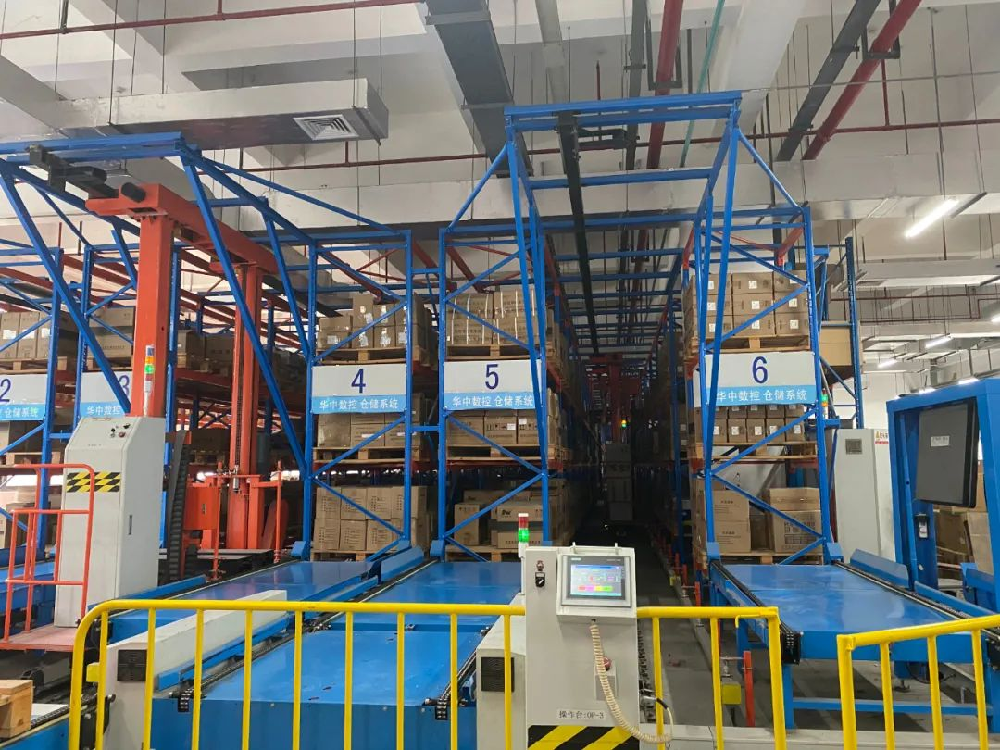

数说疫情0227：非湖北地区出现异常反弹，海外新增病例首超国内
原文链接 备份链接 国内非湖北地区25日新增病例24例，其中北京10例，从这些地方接受医学观察者数量、新增疑似病例以及待排查疑似病例等上游数据均持续稳步下降的态势看，此数据大幅反弹应属异常 文 |《财经》数据研究员徐进 图 |《财经》视觉 …

2019年上半年占据湖北省GDP约五分之一的112家省内上市公司，目前复工情况各异。部分公司影响不大，但也有企业收入面临较大下滑风险

文丨《财经》记者 张建锋 王颖 张欣培 刘以秦
编辑丨陆玲
3月16日，《财经》记者在嘉必优（688089.SH）现场看到，工厂已经开工，有员工进出。“我3月9日来上班，所在部门有一半的员工到岗。”公司一位发酵产线的员工告诉《财经》记者。
嘉必优上述场景，是湖北宣布复工以来部分企业复产的缩影。
随着全国新冠肺炎疫情得到有效控制，浙江等地在2月份就开始有序推进复工复产。作为疫情重灾区，湖北省每日新增新冠肺炎确诊病例逐步下滑至3月15日的4例，取得阶段性成果。此前几天，湖北已拉开复工序幕。
3月10日习近平赴湖北省武汉市考察疫情防控工作时指出，在加强防控的前提下，采取差异化策略，适时启动分区分级、分类分时、有条件的复工复产。
次日，湖北省新型冠状病毒感染肺炎疫情防控指挥部下发通告（简称“通告”）：全省以县域为单位，划分低、中、高风险区，实施分区分级差异化防控，企业分类分时有条件复工复产。“在中风险、低风险地区人员：凭健康码绿码，省内安全有序流动；省内客运航班、旅客列车等交通逐步有序恢复。”
目前，湖北企业复工情况如何？
《财经》记者采访发现，2019年上半年占据湖北省GDP约五分之一的112家省内上市公司，目前复工情况各异。部分保障疫情防控、重大民生、农业物资企业在疫情期间正常运行。
“公司属于重点化工企业，一些设备停产后重启成本很高，部分设备停产后就报废了，不能停产。”地处湖北省宜昌市的兴发集团（600141.SH）对《财经》记者表示，春节期间，草甘膦、磷铵等农业物资生产一直在运行。
与兴发集团同处在“停不得”名单中的企业，还有奥美医疗（002950.SZ）、中百集团（000759.SZ）等。
在湖北疫情得到有效控制后，部分属于重点产业链配套企业，承担国家、省市重大工程和重点项目的企业先批复产复工。
作为湖北地区三大支柱产业之一，汽车行业已率先复产，十堰东风卡车日产能已达200多台。
地处湖北潜江的永安药业（002365.SZ），是当地复工重点关注对象，其复工复产申请于3月6日晚间获批。“交通封锁已经解除，本地员工基本已到岗。”公司一位人士告诉《财经》记者，生产问题解决了，别的都好说。
相对于湖北其他地区，疫情中心的武汉，对复工复产管理仍较严格，除重点公司外，其他企业先按不早于3月20日24时前复工复产。
据《财经》记者了解，房地产等行业尚不在武汉复工名单中。
“我们现在不在复工名单中，线下卖房业务没法开展，公司没有新增收入。”武汉一家房地产工作人员对《财经》记者无奈表示，财务总监急得跳脚。
因银行业务无法办理，亦有房地产公司暂停发放员工工资。
目前，通往湖北省内航班、高铁、客运等交通动脉尚未恢复，省外人员无法返岗仍是当地企业复工面临的主要难题。作为截止3月14日湖北省唯一仍处于高风险区的武汉，仍未解封，交通问题表现尤为明显。
《财经》记者采访发现，此轮疫情对湖北上市公司一季度业绩影响不一。部分公司影响不大，但也有企业收入面临较大下滑风险。
分级分类有序推进
在湖北省发布复工复产通告后，位于疫情中心区的湖北上市公司，目前复工情况如何？
《财经》记者采访多家湖北上市公司发现，部分涉及重点民生、重要行业公司，在疫情期间并未停止运营。
身处暴风眼中的武汉，农贸市场全部停业，商超自然成为了蔬菜供应的主渠道。武汉国资旗下的中百集团（000759.SZ），作为一线保供的商超企业，守护着武汉市民的“菜篮子”。
中百集团相关负责人告诉《财经》记者，公司基本没有停工，人员在岗率90%以上。自1月23日武汉封城以来，除了关闭百货商店，部分仓储超市、便民超市门店保持正常营业。《财经》记者了解，中百超市目前营业只到下午5点，而且个人消费者无法进入，超市只接受社区团购。
与中百集团业务在疫情期间同样未停摆的公司，还有武汉本地医药流通企业九州通（600998.SH）。按照防疫指挥部下达的指令，公司1月21日晚即召开紧急会议，组织部分员工返岗，进行防疫物资的采购、储存及配送等相关工作。
“我们从年前忙到现在。除夕夜都是吃的盒饭，集团有上千人都这样。”公司证券部刘志峰向《财经》记者透露，即使是后台支持部门，也要上一线理货、发货。
生产疫情物质大型红外测温仪器的华中数控（300161.SZ），1月21日起，就接到大量来自各地政府部门的订单，但因为春节前，公司库存现货有约100台，很难满足突然爆发的防疫需求。“为了尽快能够供应物资，公司董事长陈吉红在朋友圈发布求助信息，冠捷科技和一家芯片公司，临时撬开仓库，将物料加急送到武汉。”华中数控副总裁李社林告诉《财经》记者。
记者了解到，楚天高速（600035.SH）及两家国内一线显示面板企业，天马微电子、华星光电在武汉的工厂亦未停工。
春节后，支援湖北疫情保障、农业物资企业率先复工复产。
生产应用于工程板房建设结构密封胶的回天新材（300041.SZ），因援助武汉火神山、雷神山医院建设，2月6日率先开了两条生产线，4日后四地全线复产，目前湖北开工率接近80%，上海、广东和常州三个基地，开工率接近90%。
“襄阳政府也鼓励我们提早开工。我们有一部分产品是替代进口的，供货给华为、宁德时代、中国中车，考虑国家战略利益和上下游产业链，地方政府允许在做好防护的前提下，尽快复工复产。”回天新材董秘章宏建告诉《财经》记者。
为保障春耕农业物资供应，主业为磷复肥、新型肥料的新洋丰（000902.SZ）也是湖北省内较早复工的一员。在疫情期间停产的三个湖北生产基地，经当地批准全面复产。作为农业物资磷肥重要生产基地，湖北省磷肥产量占全国30%以上。
进入3月份，随着湖北疫情好转，对全国和全球产业链配套有重大影响企业，承担重点项目企业的复工申请开始获批。
位居三大支柱产业之首的汽车产业，复工意义尤为重大。总部位于武汉的东风汽车集团，在十堰、襄阳均设有生产基地。
东风汽车集团相关人士告诉《财经》记者，公司武汉两家整车厂近日被批准复工。和武汉相比，十堰和襄阳的整车厂复工压力较小，各项准备工作也在紧锣密鼓进行中。3月6日—8日，公司安排104台车把分布于房县等地的1600余名员工接回十堰城区，为复工复产做准备。
良品铺子（603719.SH），目前大部分武汉门店均已经开门营业，但不接受顾客进店消费，主要订单来自线上外卖平台和社区团购。一位良品铺子店员告诉《财经》记者，武汉的主要门店都是在3月之后才开门营业，还有部分门店没有开门，营业时间是上午10点到下午5点。
《财经》记者注意到，湖北部分非急需复工企业，目前只有少许业务复产。
主业为痔疮膏等药品的马应龙（600993.SH），生产制造方面，只有防疫物资的部分生产线复工，如中药、消毒产品等，多数是来料加工。“全面复工时间还在等政府通知。”公司一位人士表示。
急盼复工批准
相对于上述重点企业复产，更多的湖北上市公司尚未复工。
“我们现在的策略只是线上办公，客户可以通过线上交纳1000元预定金锁定房源，等复工后带客户去现场看样板房。”在武汉房地产公司南国置业（002305.SZ）做销售工作的李明（化名）对《财经》记者表示，项目预计3月底能复工，正式复工约4月15号。
李明所在项目，为南国置业在武汉市阳逻经济开发区开发的洺悦华府，该项目为高层+洋房住宅。
“疫情前项目每天接待的客户有一两百组，交定金的客户占比约百分之七八十，现在的线上销售两周只有约12个客户缴纳预定金。”李明表示，“因为线上缴纳预定金后，无法带客户办理相关手续，所以就没有新的提成，目前只能拿基本工资，但我们的收入主要来自提成。”
南国置业主业为物业出租和物业管理、物业销售。除了中大型超市、药房等重点商户开业，及外地房地产项目逐步复工外，公司在武汉的房地产项目尚未开工。2019年上半年，物业销售占公司营业收入比例超过90%。
根据《通告》，武汉地区，除疫情防控、公共事业、群众生活、农业生产必需涉及重要国计民生的企业，及对全国、全球产业链配套有重大影响的企业经批准可复工外，其他企业先按不早于3月20日24时前复工复产。
显然李明所在的房地产公司，目前暂不在复工名单中。
与南国置业处境相同，另一家湖北房企也未能开工。
“股东着急，董事长更急着，但必须要等到通知才能复工。”一位湖北房企人士对《财经》记者无奈表示，武汉处于疫情重灾区，没办法，销售人员采取线上办公。“因为不能去银行办理业务，员工工资暂停发放。”
位于武汉的部分工业园也在等待复工通知。
“我们工业园进驻的企业有7、8家，包括建材、食品、智能装备，民企为主。此前武汉有开复工会议，主要以涉及民生、医药等企业为主。”一位武汉工业园负责人王强（化名）向《财经》记者介绍，我们工业园内公司尚不在复工名单中。
与上述企业翘盼复工类似，多家湖北上市公司虽然省外业务已顺利复工，但省内业务何时重启，仍需等待政府部门的通知。
湖北水泥产量占公司约三分之一的华新水泥（600801.SH），湖北之外的基地复工情况比较顺利，湖北省内生产尚未复工。“公司在湖北的项目多集中在高风险区、中风险区，低风险区业务较少。”公司一位人士表示，公司湖北生产基地主要在鄂东、鄂西，分布较广，各地复工时间要等待当地相关部门具体通知。
所属旅游行业的三特索道（002159.SZ），因从疫情初期已经开始着手复工的准备工作，目前公司省外部分项目已复工，但湖北省内项目还在闭园中。公司回复《财经》记者称，公司在湖北省内有5个项目，复工时间需要根据当地疫情控制情况而定，目前尚没有明确的开园时间。
虽然湖北尚有很多公司不能复工，但准备工作早已开始。
“公司制定了分批次复工计划，有私家车的员工将会第一批到岗。”南国置业销售人员李明表示，公司也制作了防疫手册，并成立了专门的防疫小组，防疫物资如消毒液、口罩等也已准备好。“虽然口罩比较难买点，但通过各种渠道，东拼西凑的数量，够用一些时间。”
“防护口罩充足，是复工的前提。”华新水泥上述人员亦对《财经》记者表示，公司大股东位于国外，此前帮助公司从海外采购了很多口罩，除了给火神山医院等捐献外，目前还有充足的口罩以供复工使用。
复工难题待解
全国各地早已陆续复工或全面复工，但对于疫情中心的武汉来说，全面复工还有点远。
“我已经在外地待了两个月，公司已经部分复工，我一直着急回去，但是递交的申请一直没通过。我所在的武汉的小区现在基本还是封闭状态，回去很难。”武汉一家医药公司人士无奈告诉《财经》记者。
根据记者了解，外地人员返汉进入小区需要经过多个流程，包括准备材料、提交返汉申请、等待审核以及最终通行证的发放。“我们社区基本不批，可能是为了防范风险吧。”上述医药公司人士表示。
而除了程序繁琐、审核异常严格的返汉申请外，员工到岗人数不足、交通不畅成为阻碍武汉复工的最大难题。
“有些员工所在地仍在封路状态，员工根本没法出来，这是影响我们复工的最大问题。”武汉鑫立科技人士直言，公司尽管已部分复工，但员工十分不足。华新水泥人士也告诉记者，省内交通不顺畅，员工返岗受到了一定限制。
“很多外地滞留的员工回不了武汉，而且回来之后还需要隔离两周。在湖北境内只要有外地流通人员过来必须自行隔离。”武汉优光科技人士告诉记者，公司目前复工人员到岗人数不足1/5。
由于武汉的特殊疫情，也有员工选择离职。“有几个同事的家人已经不让他们来武汉工作了。目前招工有点困难。”武汉关山觉文化CEO徐郑冰告诉《财经》记者。
部分人员返岗受阻，也让九州通、启迪环境（000826.SZ）在岗一线人员的工作量非常大。
“由于疫情期间医院每天产生了大量的医疗废弃物，时间紧、任务繁重。”启迪环境相关负责人表示，我们面临巨大的压力和挑战，团队采取“三班倒”的方式进行医废处理，一天24小时不停歇。
记者了解到，由于武汉公共交通依然处于停滞状态，目前复工人员主要以拥有私家车的员工为主。不过，为了解决该问题，一些企业正在通过班车的方式解决员工上下班出行问题。
交通不畅一方面造成了员工复工的困难，另一方面，也为公司物流带来了压力。回天新材董秘章宏建告诉记者，由于湖北大多数地区实行了封城措施，交通已经被阻隔，发往外地的运输也受到了影响，存在着物流延迟、运费上涨的压力。
武汉工厂有约700名员工，目前留在武汉约200名，到岗约70名的华中数控，虽然一些员工强烈要求回来上班，但公司也面临两难抉择。“员工回来上班，很可能下班不能进社区，或者家里还有别人，怎么办？集中安排住酒店的费用确实太高了，如果我现在安排100个员工来上班，一天酒店费用就是2万块钱。”李社林说。
“受春节假期及多地实施疫情封锁的影响，人工、运输等成本上涨明显，生产端成本确实有所提高。”九州通对《财经》记者表示，原材料供应不足，目前部分防护用品有一定紧张。
已经拿到复工许可证的安道麦A（000553.SZ），也只能部分复产。受供应商只有部分复工、物流通关缓慢影响，原材料供应不足，全面复工尚需时日。
不过，近日，湖北省交通运输厅相关负责人表示，目前，各地都制定了逐步恢复公共交通出行方案，未来几天，除武汉外，更多市县将逐步恢复公共交通出行，也将有更多“点对点”、“一站式”车辆护送务工人员返岗。
武汉已有企业复工，但复工人数受到限制，仅是部分复工。更多的企业仍在焦急地等待复工中。对于很多企业，政府仍没有明确的复工时间表。
武汉颂大教育科技董事长徐春林也希望可以尽快复工，“我希望我们可以在3月20日复工，但是政府目前没有通知，需要什么条件才可以复工。”
徐春林告诉记者，疫情至少使公司减少了30%、大约1亿以上的营收。“疫情带来的创伤是巨大的，我们要活下去，必须找办法。一方面我们进行了业务的结构性调整，放弃或去掉某些业务，深入打透有希望爆发的业务。同时，必须压缩开支，省下每一分钱，熬下去，熬到春暖花开。”徐春林说。
“我们的业务基本上都停滞了，第一季度基本没有营收。就算复工后，市场回暖需要时间，下半年的现金流可能会出现紧张。”徐郑冰告诉记者。
但是复工，不仅仅需要交通的恢复，更需要公共服务设施的恢复。“即便复工申请获批，但如果我们周围的公共交通和餐饮等公共服务没有得到恢复。我们也没有办法正常上班。”徐春林告诉记者。
业绩影响不一
《财经》记者采访发现，此轮疫情对湖北上市公司业绩影响不同。
没有停产的兴发集团，受疫情影响不大。“下游客户复工较晚延迟提货，目前公司订单超过库存。”公司一位人士告诉《财经》记者，公司水运渠道没有受到限制，因公司磷铵等产品属于农资，省内交通有绿色通道，加之一季度是淡季，所以业绩影响较小。
较早复工的回天新材，虽然2月份湖北地区收入受到较大影响，但公司对湖北省的收入不具有依赖性，短期内经营受疫情影响亦不大。
2016年至2018年，公司营业收入主要来自于华东、华南地区。同期，公司在华中地区的营业收入占营业总收入的比例分别为7.35%、8.38%、14.85%。
相对于上述公司，因受疫情期间全国高速公路免费政策影响，楚天高速虽然很多本地员工坚守岗位，但公司2月份、3月份，基本上没有收入。“与往年同期相比，收入大幅下降。”公司相关人士表示。
三特索道亦对《财经》记者表示，目前，虽然省外项目已陆续开业，但为防范疫情，各项目均采取了严格控制客流量的举措，省内项目恢复运营时间尚不确定，一季度的业绩面临较大考验。
除了部分公司一季度业绩面临考验外，部分湖北房企也面临资金压力。
一位福星股份人员告诉《财经》记者，受疫情影响，公司销售业务无法实际推进，收入影响较大，同时无法办理质押业务，让银行发放新的贷款不太可能。
对受疫情影响的企业，湖北省也出台了相关扶持政策。
2月份，湖北发布通知，对受疫情影响、授信到期还款确有困难的中小微企业，金融机构要通过适当降低利率、调整还款期限等方式，帮助企业渡过难关；给予相关企业就业补贴、降低生产成本等。
上述福星股份人员表示，公司有两笔贷款到期，向银行申请延期，目前已获批准。
富邦股份（300387.SZ）亦告诉《财经》记者，疫情期间，武汉市东湖高新区和应城市政府对公司维持正常经营生产活动给予了大力支持，“经公司申请，应城市派驻工作组驻点指导生产基地防疫生产，协调银行等金融机构给予疫情期间融资政策支持。”
九州通亦希望，政府给予更多支持，如低息应急贷款、降低流通环节的资金成本。

▲点击图片查看更多疫情报道
责编 | 蒋丽 lijiang@caijing.com.cn
本文为《财经》杂志原创文章，未经授权不得转载或建立镜像。如需转载，请在文末留言申请并获取授权。
原文链接 备份链接 国内非湖北地区25日新增病例24例，其中北京10例，从这些地方接受医学观察者数量、新增疑似病例以及待排查疑似病例等上游数据均持续稳步下降的态势看，此数据大幅反弹应属异常 文 |《财经》数据研究员徐进 图 |《财经》视觉 …
原文链接 备份链接 燃财经（ID:rancaijing）原创 作者 | 孟亚娜 编辑 | 凌远川 坐电梯像“吃火锅”，吃饭像“参加高考”，红外线测体温，脚踏式按键开门神器……近日，互联网公司的花式复工火了，网友大呼，太硬核了。 图片来源 …
原文链接 备份链接 全国多数省区已实现“零新增”，统计上未见疫情卷土重来证据，也未发现意味着疫情死灰复燃的个案 文/《财经》数据研究员徐进 图/《财经》视觉中心 编辑/谢丽容 今天是农历二月二“龙抬头”。按北方农村传统，今起春耕大忙开 …
原文链接 备份链接 全国21省份22日零新增，抗疫战果继续巩固。此前我们预测湖北疑似病例存量，在拉网排查取得成功后会于22日开始下降，最新数据确实印证了该预测 文 |《财经》数据研究员 徐进 图 |《财经》视觉中心 编辑 | 谢丽容 …
原文链接 备份链接 人员返岗难、道路不畅通、现金流紧绷，中小物流企业需要更多的支持和帮助，这不仅事关物流业全面复工复产，也关系到民生和社会稳定 文 |《财经》记者 王静仪 编辑 | 施智梁 快递员王为这几天已经忙昏了头，他所在的上海市浦 …